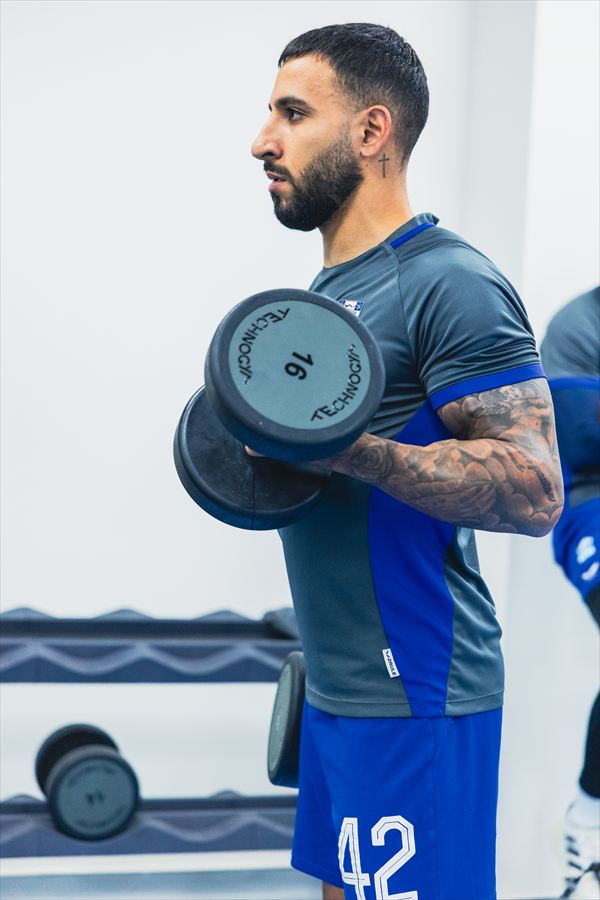
Bônus 01
Preparação física na academia
Os exercícios de força que utilizo para complementar minha preparação como jogador.
- Membros inferiores
- Core
- Demonstrações em vídeo
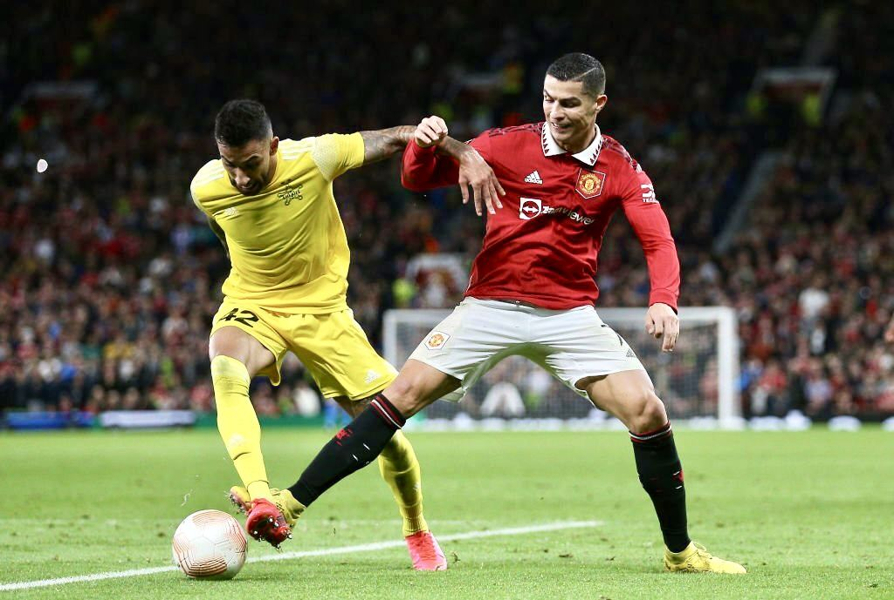
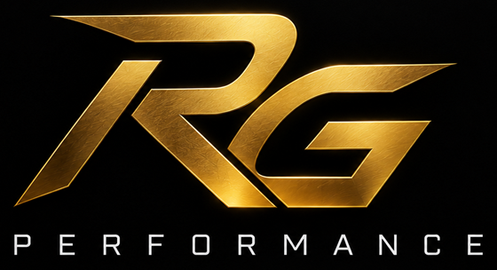
Tenha acesso aos exercícios, métodos e conceitos que utilizo na minha própria preparação como jogador profissional.
Desenvolva sua técnica, velocidade, força, explosão e condicionamento com uma preparação baseada em mais de 20 anos vivendo o futebol.
Quero treinar como um profissional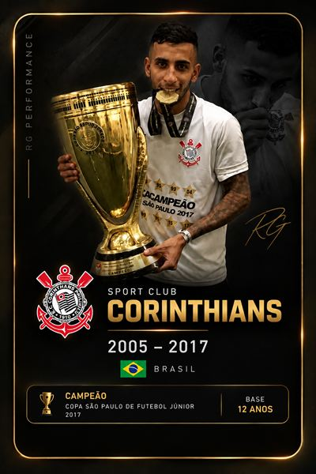
01 Corinthians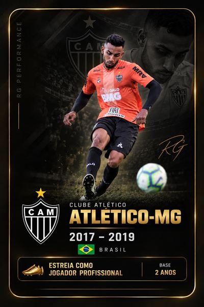
02 Atlético Mineiro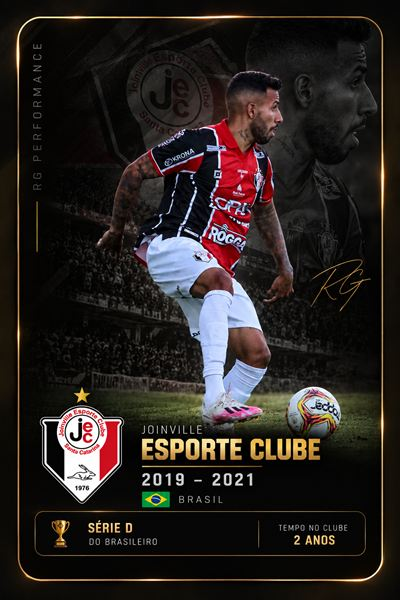
03 Joinville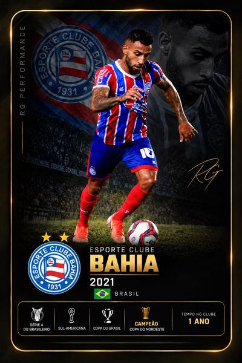
04 Bahia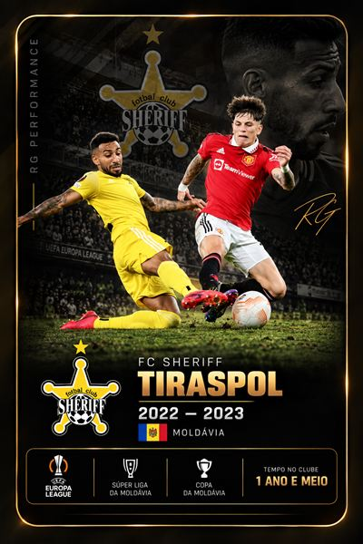
05 Sheriff Tiraspol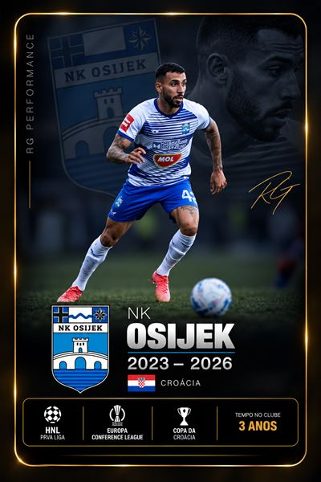
06 OsijekVocê treina. Se esforça. Assiste vídeos. Salva exercícios.
Mas mesmo treinando, fica aquela dúvida: será que eu estou realmente fazendo o que preciso para evoluir?
Treinar muito não significa treinar certo.
Você salva vários exercícios, mas não sabe quais realmente fazem sentido para você.
Treina físico e técnica, mas não sabe como organizar sua preparação durante a semana.
Copia treinos de outros jogadores, sem entender quando, como e por que fazer cada exercício.
Se esforça e treina muito, mas continua sem saber se está realmente evoluindo dentro de campo.
O problema não é falta de vontade.
É falta de direção.
Você não precisa de mais um exercício salvo no Instagram.
Precisa saber o que treinar, por que treinar e como se preparar.
Ela é construída através de uma preparação completa.
Desenvolva mais qualidade e confiança com a bola através de domínio, passe, primeiro toque, escaneamento, bola longa e situações que realmente acontecem dentro do jogo.
Desenvolva velocidade, força, explosão, condicionamento e mobilidade para estar mais preparado para as exigências do jogo.
Como eu me preparo mentalmente para competir, lidar com pressão, erros, confiança e os altos e baixos do futebol.
Um exercício trabalha uma parte.
Um jogador precisa estar preparado por completo.
O RG Performance não é apenas uma coleção de exercícios. É uma preparação estruturada para desenvolver os diferentes pilares que fazem parte da performance de um jogador.
Para qualquer jogador que queira evoluir seu futebol e se preparar melhor, independentemente do nível em que joga hoje.
Você não precisa ser profissional para treinar como um.
Quero treinar como um profissional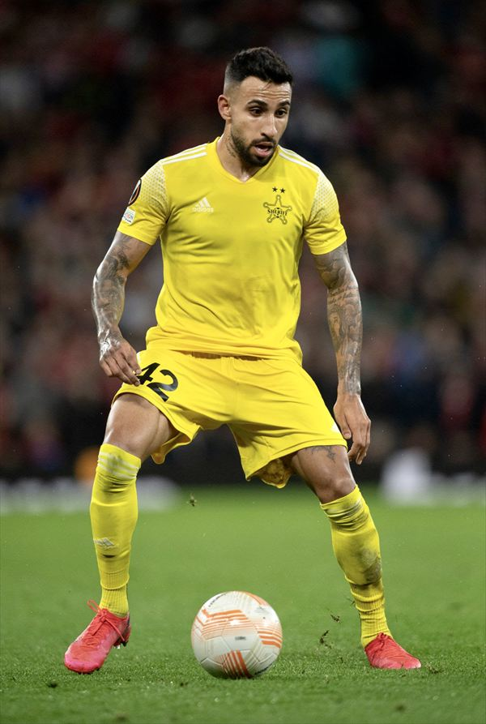
Jogador profissional com mais de 20 anos vivendo o futebol por dentro — da formação no Corinthians ao futebol profissional no Brasil e na Europa.
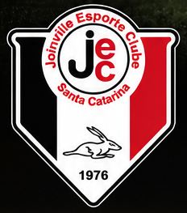
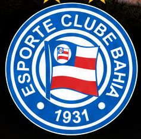
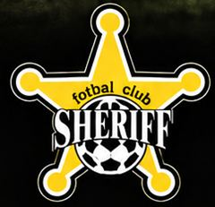
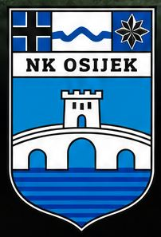
Comecei no Corinthians aos 5 anos e passei mais de 12 anos nas categorias de base do clube, encerrando esse ciclo com a conquista da Copa São Paulo de Futebol Júnior.
Após a formação no Corinthians, segui minha carreira no futebol profissional, passando por Atlético-MG, Joinville e Bahia, e vivendo diferentes níveis e realidades do futebol brasileiro.
Minha carreira chegou à Europa no Sheriff Tiraspol, onde disputei competições internacionais e vivi por uma temporada e meia a rotina do futebol europeu em alto nível.
Depois, foram três anos na Croácia, ampliando ainda mais minha experiência dentro do futebol europeu.
Mais de 20 anos dentro do futebol me ensinaram que performance vai muito além do treino com bola. Técnica, físico, recuperação, mentalidade, pressão, lesões, erros, evolução e disciplina fazem parte da preparação de um jogador profissional.
Foi dessa experiência que nasceu
o RG Performance.
Não para ensinar uma teoria sobre futebol, mas para compartilhar o que eu aprendi, apliquei e vivi na minha própria carreira.
Um treinamento criado a partir da experiência de quem vive o futebol profissional, com aulas práticas para você desenvolver sua técnica, seu físico e entender como um jogador profissional se prepara.
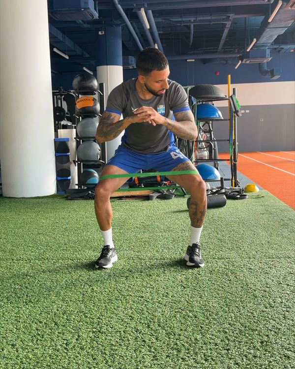
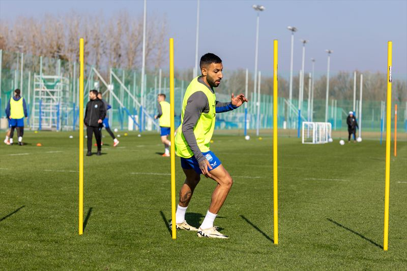
Desenvolva as capacidades físicas que o futebol exige.
Exercícios demonstrados em vídeo
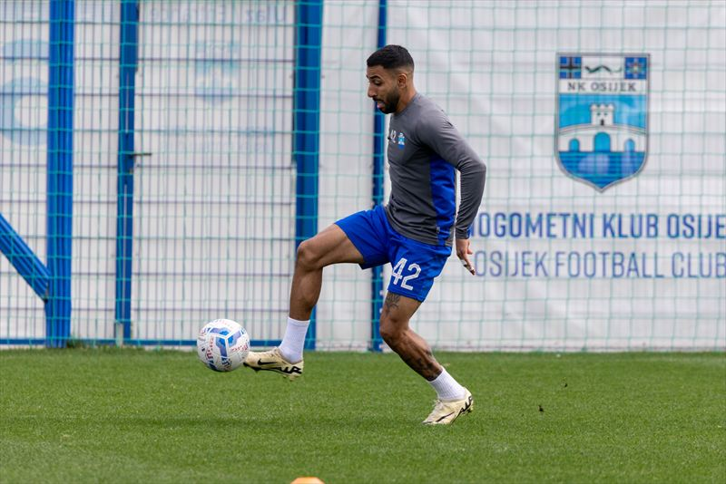
Evolua sua qualidade e confiança com a bola nos pés.
Exercícios demonstrados em vídeo
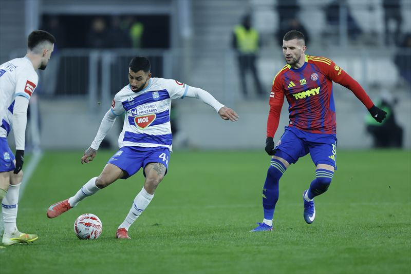
Aprenda a enxergar e entender melhor o que acontece dentro de campo.

Bônus 01
Os exercícios de força que utilizo para complementar minha preparação como jogador.
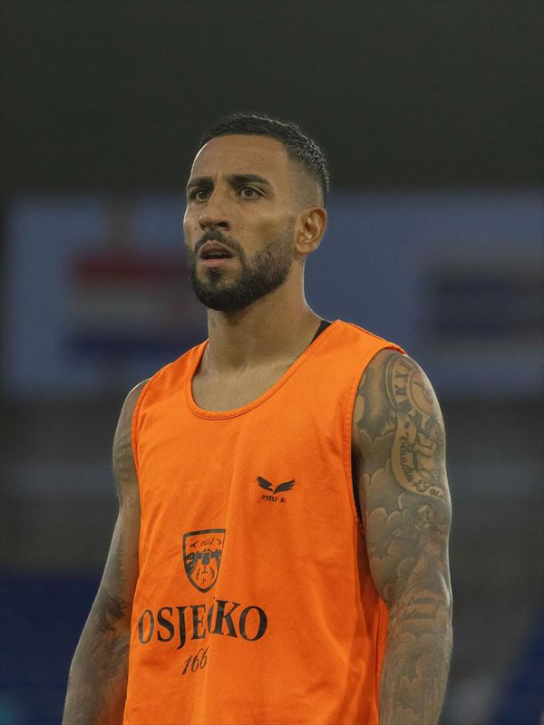
Bônus 02
O lado do futebol que não se desenvolve apenas treinando com a bola.
Não é apenas uma
biblioteca de exercícios.
O RG Performance foi organizado para que você entenda todas as partes da preparação: como preparar seu corpo, desenvolver suas capacidades físicas, evoluir tecnicamente e entender melhor o jogo.
Quero treinar como um profissionalTudo o que você vai receber
Valor total R$682
Mas você não vai pagar R$682.
Nem R$497.
Nem R$297.
Acesso completo ao RG Performance
De R$ 682
Por 12x de R$ 10,03
ou R$ 97,00 à vista
Entre no RG Performance, acesse o conteúdo e veja por você mesmo se o programa faz sentido para sua evolução.
Se dentro de 7 dias você decidir que o RG Performance não é para você, basta solicitar o cancelamento conforme as condições da garantia.
7 dias de garantia
A partir daqui, a escolha é sua.
Continuar procurando exercícios aleatórios, montando seus próprios treinos e tentando descobrir sozinho como organizar sua preparação.
Ter acesso a uma estrutura criada a partir da experiência de um jogador profissional, com exercícios demonstrados em vídeo e conteúdos para desenvolver sua preparação física, técnica, inteligência de jogo e mentalidade.
Você pode continuar treinando como sempre treinou…
Ou começar a treinar como um profissional
Quero treinar como um profissionalNão. O RG Performance pode ser utilizado tanto por jogadores que já estão inseridos em um clube quanto por quem está buscando evoluir e treinar como um atleta profissional.
Não há limite de idade para ter acesso ao RG Performance. O conteúdo pode ser utilizado por jogadores em diferentes fases e níveis de desenvolvimento. Cada atleta deve adaptar a intensidade, volume e exercícios à sua idade, condição física e nível de preparação.
Não, para acessar o conteúdo principal. O treinamento de academia faz parte de um bônus específico, enquanto grande parte do RG Performance é voltada ao trabalho realizado no campo.
Não, apenas um espaço e uma bola.
Após a confirmação do pagamento, você receberá um e-mail com seu login e senha, tendo acesso imediato às aulas.
Você terá o acesso por 1 ano.
Você terá 7 dias de garantia, de acordo com as condições apresentadas na oferta.